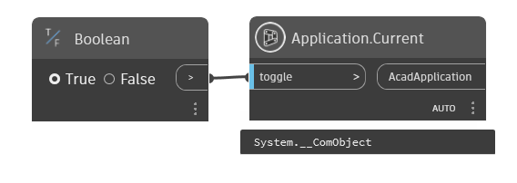
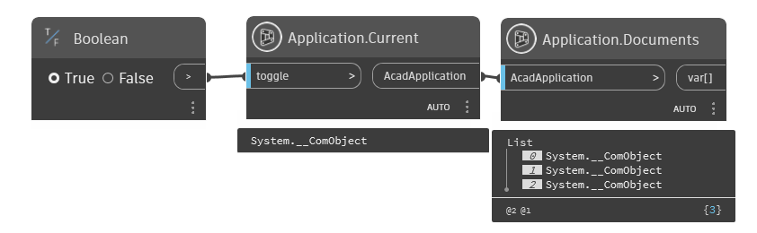
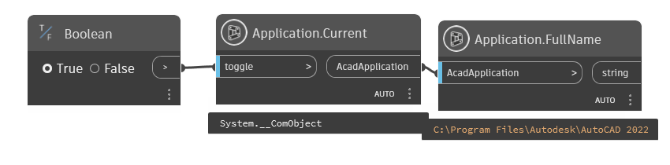
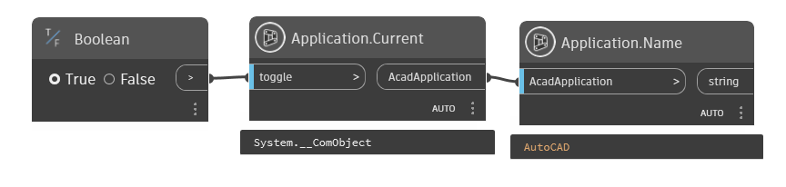
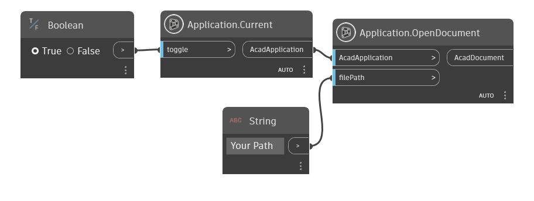
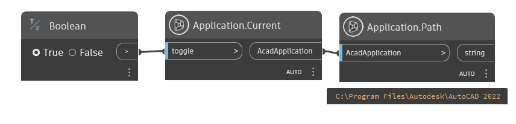
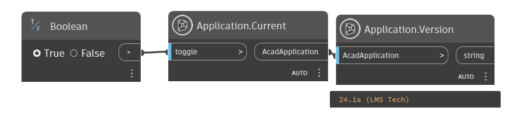

Class Application
- Namespace
- OpenMEPCad.Autocad
- Assembly
- OpenMEPCad.dll
An instance of the AutoCAD application.
public class Application- Inheritance
-
Application
- Inherited Members
Methods
Current(bool)
Get Current Application Of Autocad Application Opening
public static dynamic Current(bool toggle)Parameters
togglebool
Returns
- dynamic
AcadApplication
Examples

Application.Current.dynDocuments(dynamic)
Return All Document Opening In Autocad Application
public static List<dynamic> Documents(dynamic AcadApplication)Parameters
AcadApplicationdynamic
Returns
Examples

Application.Documents.dynFullName(dynamic)
Return
public static string FullName(dynamic AcadApplication)Parameters
AcadApplicationdynamic
Returns
Examples

Application.FullName.dynName(dynamic)
Return
public static string Name(dynamic AcadApplication)Parameters
AcadApplicationdynamic
Returns
Examples

Application.Name.dynOpenDocument(dynamic, string)
Return AcadDocument Opened by file path
public static dynamic OpenDocument(dynamic AcadApplication, string filePath)Parameters
AcadApplicationdynamicfilePathstring
Returns
- dynamic
AcadDocument
Examples

Application.OpenDocument.dynExceptions
Path(dynamic)
Return
public static string Path(dynamic AcadApplication)Parameters
AcadApplicationdynamic
Returns
Examples

Application.Path.dynVersion(dynamic)
Return
public static string Version(dynamic AcadApplication)Parameters
AcadApplicationdynamic
Returns
Examples

Application.Version.dyn